VCF Operations | vSphere World vs VCF World
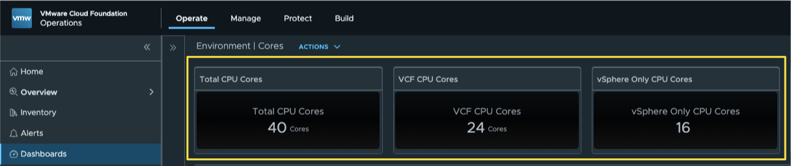
Navigating CPU Core Counts: vSphere World vs. VCF World in VCF Operations
With VMware licensing now aligned around subscription-based cpu core counts, tracking cpu core consumption accurately across your estate is more important than ever. If your environment runs a hybrid mix of full VMware Cloud Foundation (VCF) 9.1 deployments alongside traditional vSphere-only setups, you’ve likely faced this question:
"How do I cleanly separate and report on my VCF core usage versus my non-VCF core usage?"
Within VCF Operations, answering this comes down to understanding the distinction between vSphere World and VCF World.
Understanding the Boundaries
To gather the right metrics, you first need to know how VCF Operations categorizes your vCenter Server instances:
- vSphere World: Encompasses every vCenter connected to VCF Operations—whether it’s part of a VCF Management Domain, a Workload Domain, or a standalone, non-VCF vSphere deployment.
- VCF World: Includes only the vCenters explicitly defined within a VCF Fleet (Management and Workload Domains). Standalone vCenters are excluded here.
Key Core Metrics
Both environments expose an identical metric name:
CPU|Number of physical CPUs (Cores)
Here is how you leverage that metric depending on what you need to report:
1. Grand Total Core Count (All vCenters):
Use the vSphere World metric: CPU|Number of physical CPUs (Cores)
2. VCF Core Count Only:
Use the VCF World metric: CPU|Number of physical CPUs (Cores)
3. Non-VCF (Standalone) Core Count:
This specific value isn't available out of the box (OOTB), but the logic is simple:
Non-VCF Cores = vSphere World Cores - VCF World Cores
The Solution: Building a Super Metric
Because the non-VCF core count isn't tracked out of the box, we can easily calculate it by creating a Super Metric in VCF Operations that subtracts the VCF World core total from the overall vSphere World core total.
Super Metric:
Here is how I defined my Super Metric:
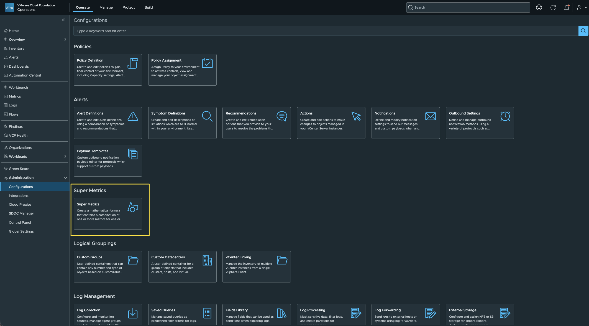
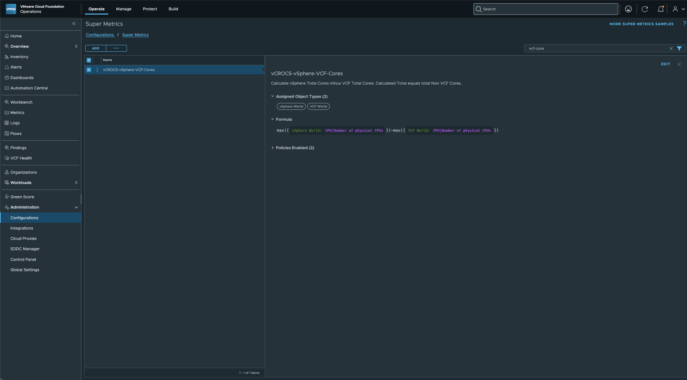
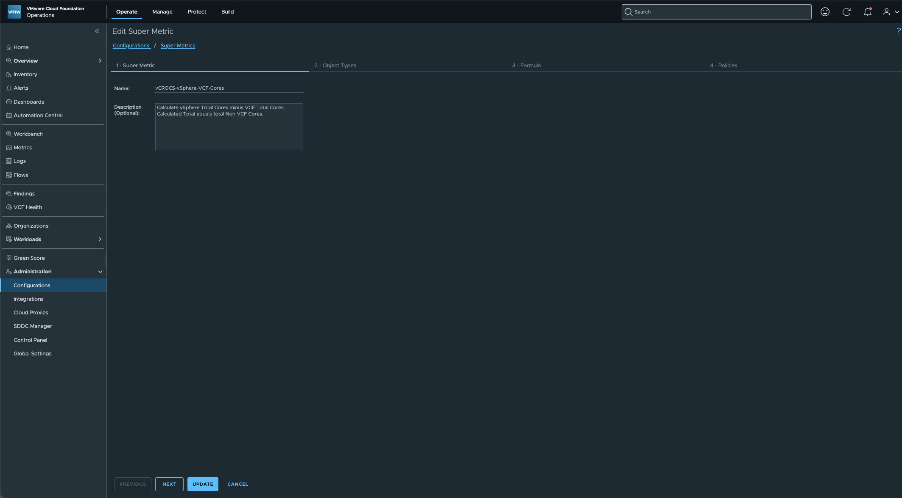
Add VCF World and vSphere for Object Types:
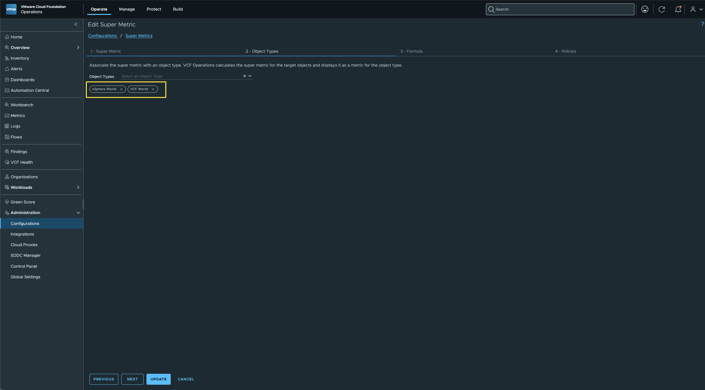
Validate the Formula:
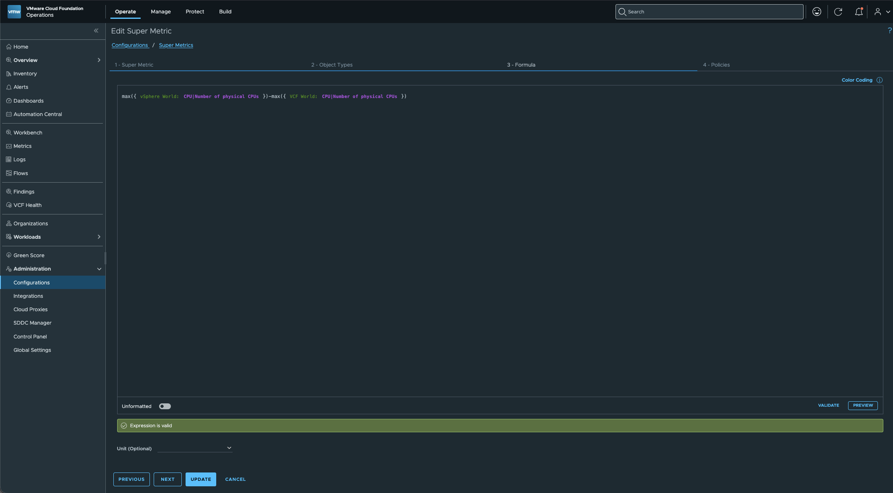
This is the Formula I used:
max({vSphere World: CPU|Number of physical CPUs})-max({VCF World: CPU|Number of physical CPUs})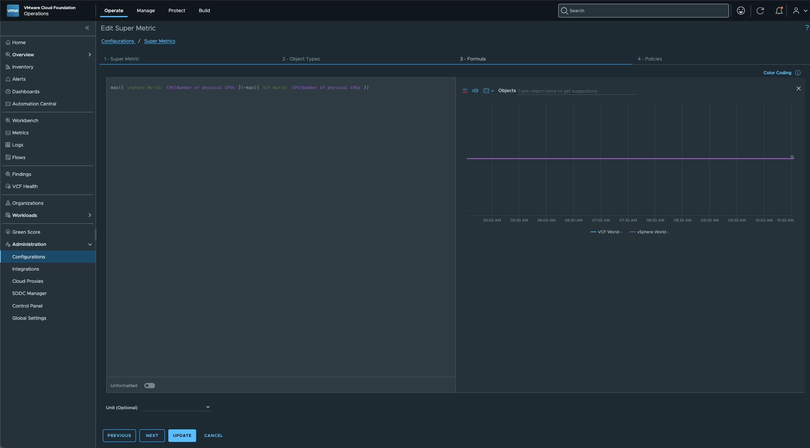
Make sure to select the policies to use the Super Metric with:
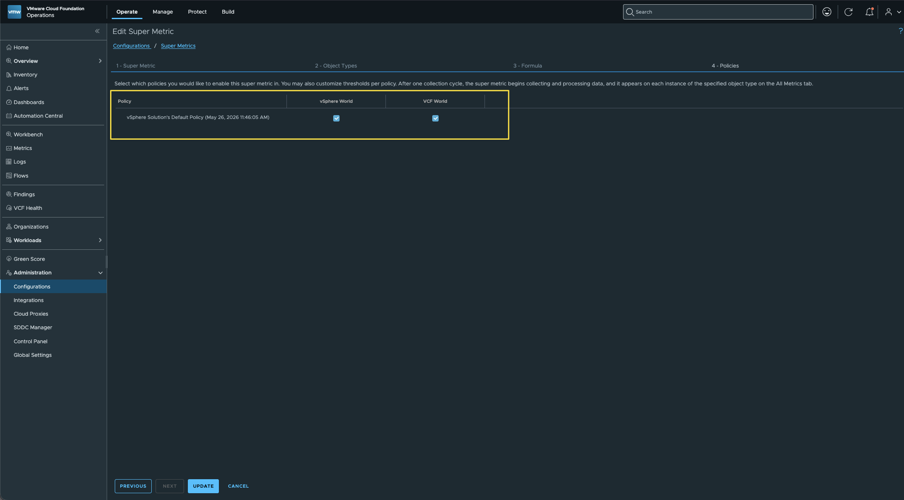
Dashboard Scoreboard Widget:
To show the CPU Core Counts on the Dashboard, use the Scoreboard Widget.
Here is how each Scoreboard Widget is defined:
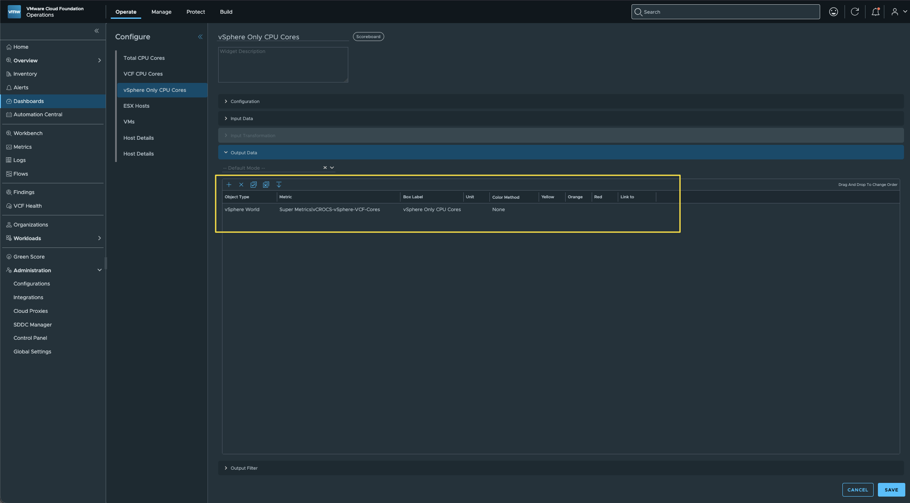
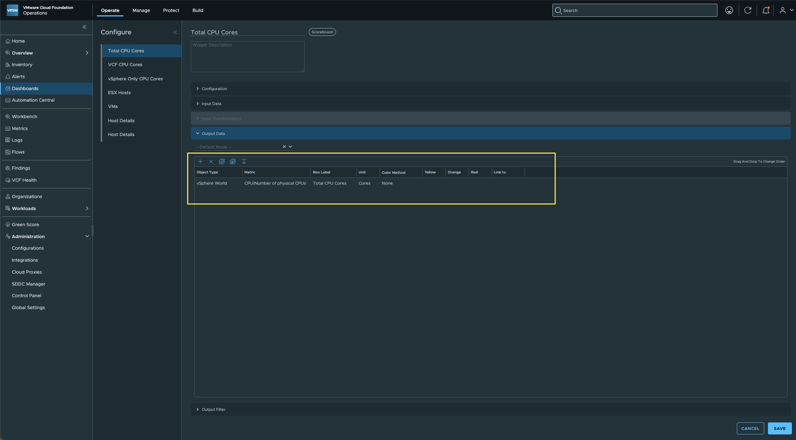
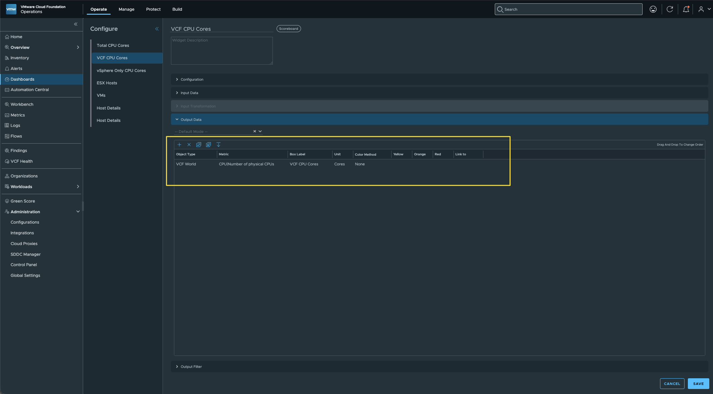
View:
After Creating the Super Metric I was also able to use the calculated Value in a Donut View. 👍🏻
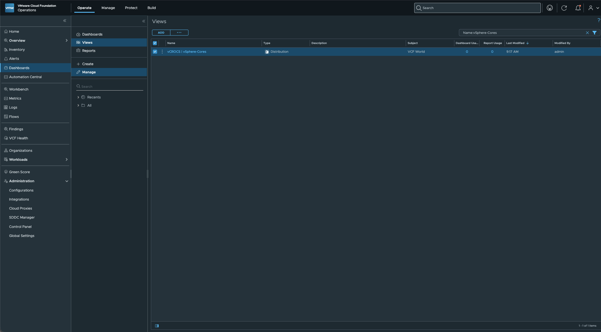
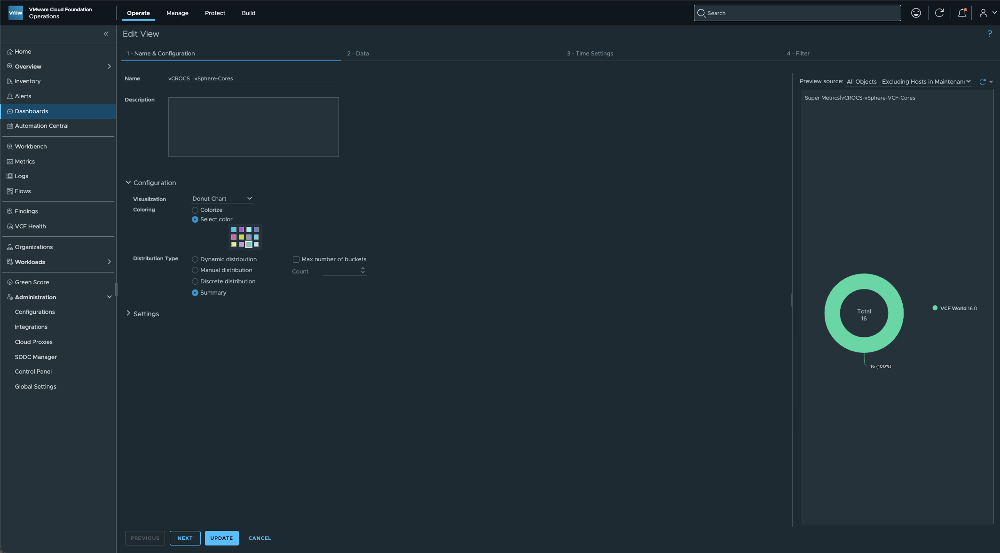
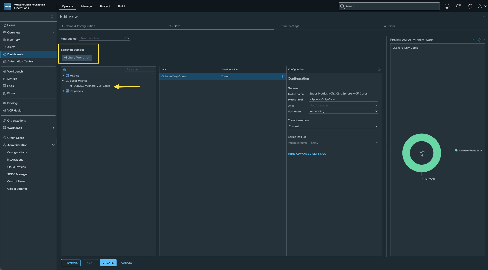
Dashboard:
This Dashboard delivers complete visibility into your CPU core counts across the three scenarios we've broken down in this blog post.
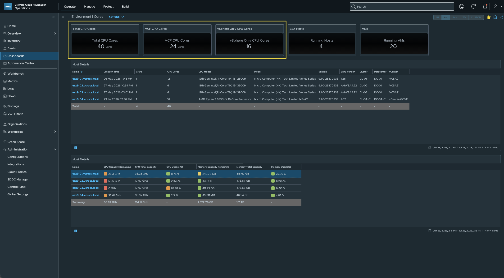
If you're beginning your path to VCF 9.1, having a clear Dashboard to track core counts is essential. I hope this walkthrough helps you build a great reporting tool to show management your ongoing transition to VCF 9.1!
I was recently asked how to accurately report on CPU core counts across these different scenarios. Whenever a question like this comes up—one that I know others in the vCommunity are likely tackling as well—I always like to write up a quick post to share the solution.